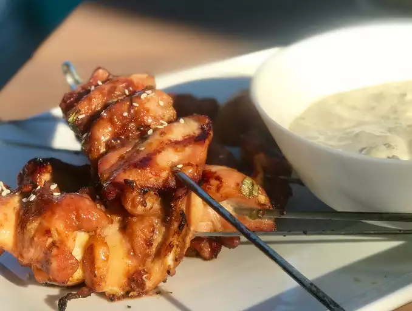

Chicken Teriyaki Skewers

Grilled Chicken Teriyaki Skewers with Miso Ranch
A delicious recipe for teriyaki chicken skewers. If "teri" means "shine," and "yaki" refers to grilling, then these chicken skewers are the perfect example of teriyaki. Marinated in soy sauce, sake, and mirin, the chicken is grilled to sweet, smoky perfection and dipped in a refreshing, herby miso "ranch" sauce that'll send your summer cookout guests into a frenzy. The only bottles not invited to this party are bottled teriyaki sauces! Garnish with sesame seeds if desired.
Igredients
Chicken Skewers
- 2 pounds skinless, boneless chicken thighs
- ½ cup soy sauce
- ½ cup sake
- ⅓ cup mirin (Japanese sweet wine)
- ¼ cup brown sugar
- 2 tablespoons minced green onions
- 2 teaspoons finely grated ginger
- 1 tablespoon vegetable oil
Miso Ranch Dressing
- ¾ cup mayonnaise
- ⅓ cup buttermilk
- ¼ cup sour cream
- 1 tablespoon white miso paste, or to taste
- 1 tablespoon minced green onion
- 1 clove garlic, crushed
- 1 tablespoon finely chopped fresh tarragon
- 1 tablespoon finely chopped fresh dill
- 1 tablespoon finely chopped fresh chives
- freshly ground black pepper to taste
- 1 pinch cayenne pepper
Directions
- Soak bamboo skewers in water.
- Prepare the chicken skewers: Cut chicken thighs in half lengthwise along the creases and halve the thicker portions to get 3 or 4 pieces each. Place chicken in a bowl. Pour in soy sauce, sake, mirin, brown sugar, green onions, ginger, and oil. Toss by hand until well combined and brown sugar is dissolved. Cover top in plastic wrap and marinate in the refrigerator for 2 to 6 hours.
- Make the dressing: Combine mayonnaise, buttermilk, sour cream, and miso in a bowl. Add green onion, garlic, tarragon, dill, and chives. Season with black pepper and cayenne. Whisk dressing until thoroughly combined.
- Thread chicken pieces onto skewers. Strain marinade into a saucepan and bring to a boil to make the glaze.
- Preheat a grill for medium-high heat. Grill skewers, basting with some of the reserved marinade, until meat firms up and springs back to the touch, 4 to 5 minutes per side.
- Serve skewers next to the miso ranch dressing and brush with reserved glaze.